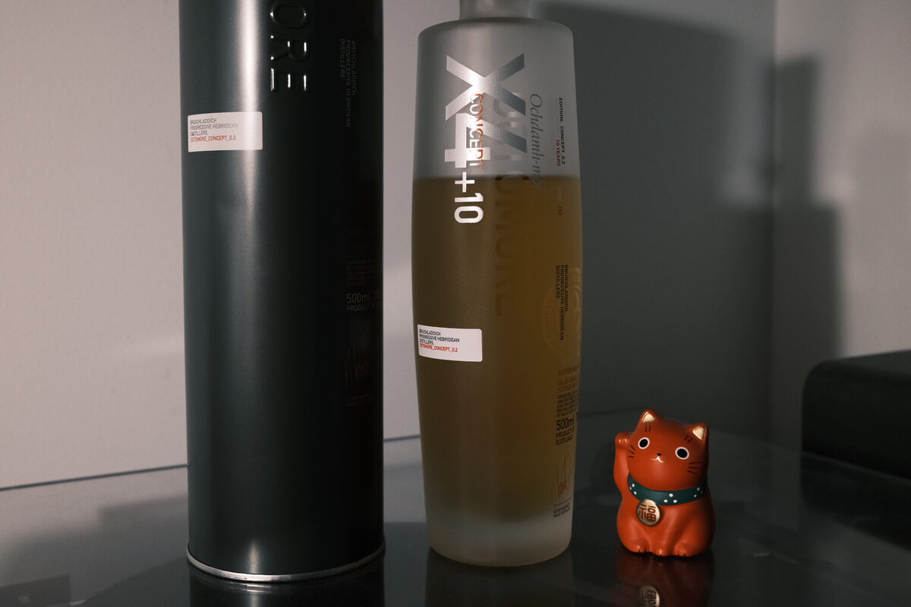

Octomore (Bruichladdich) "X4+10" 10 years 70% (bourbon, sweet wine, sherry)
The second Octomore concept release: Octomore X4+10 Concept 0.2. Let me draw attention to the ABV: 70 per cent. Let me draw attention to why that is: quadruple distilled. Let me draw attention to the age statement: 10 years.
Colour Gold.
Nose Banana, caramel, cream. Banana caramel sundae? There’s some oak here. More cream and tropical fruits. Brown sugar cookies. Dark roast peanut butter. It’s actually quite impressive that these notes exist at this ABV – very well integrated. With a bit of water, roasted hazelnuts and almonds.
Palate Banana and caramel again. A little funky, reminiscent of a high-ester rum. Very sweet, sugary. With water, some herbal and spicy notes: lavender and cloves. Some tart berries and a welcome dose of acidity. Is that smoke? Heavy, creamy, chocolate cake and smoke? Well, there’s some boiled sweets.
Finish Esters and whipped cream. A hint of dried fruits. Soft-serve ice cream and a chocolate flake. Banana bread. Malty, rounded. Very long. With water, it becomes supremely malty. Waffles. Boiled sweets and more cream. Lovely! Banoffee tart. As a final goodbye, some menthol and mint.
Comments This malt is bananas. Bananas ABV and bananas in the tasting notes. Not sure I’m behind quadruple distillation. The peat has disappeared completely and the dram is simpler than expected. That said, the clarity is impressive and it is well executed. For an Octomore, too extreme, unbalanced. For a whisky, solid stuff. Also on the border of being an explosion hazard. 85/100.

Posted by Dominic on 08 May 2021